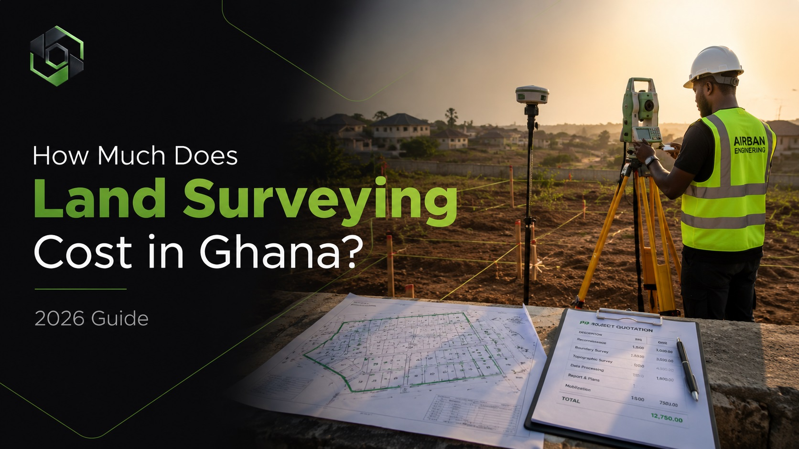

“A good survey does not only measure land — it protects your investment.”
If you are planning to buy land, build, register property, prepare a site plan or verify boundaries in Ghana, one of the most important questions is: how much does land surveying cost?
The answer is not always fixed because every land situation is different. A small residential plot in an accessible area will not cost the same as a large, vegetated, disputed or difficult-to-access parcel.
Average Cost of Land Surveying in Ghana
In many cases, land surveying services in Ghana may range from:
- GHS 2,000 – GHS 6,000+ for standard residential plots
- Higher amounts for large lands, difficult terrain, commercial sites or complex documentation needs
Why Surveying Prices Are Not Always the Same
A proper survey involves more than showing up with equipment. It includes field work, measurements, boundary checks, data processing, plan preparation and sometimes coordination with documentation requirements.
That is why prices vary from project to project.
Factors That Affect Land Surveying Cost
1. Location of the Land
Surveying in busy or fast-developing areas such as Accra, Kasoa and Cape Coast may involve higher logistics, travel and coordination costs compared to some rural areas.
2. Size of the Land
The larger the land, the more time and field data are usually required. Bigger parcels may also need more boundary checks and processing.
3. Accessibility
If the land is difficult to reach, heavily vegetated, waterlogged or far from main roads, the cost may increase because fieldwork becomes more demanding.
4. Type of Survey Required
Different survey types require different levels of detail.
- Boundary survey
- Cadastral survey
- Site plan preparation
- Topographic survey
- Engineering or setting-out survey
5. Documentation and Deliverables
Producing plans, reports, site plans, cadastral outputs or documentation support can also affect the final cost.
Types of Surveying Services You May Need
- Boundary Survey: Confirms the true limits of your land.
- Cadastral Survey: Supports ownership documentation and registration.
- Site Plan: Often needed for permits, documentation and planning.
- Topographic Survey: Shows terrain, levels, features and drainage conditions.
- Setting-Out: Transfers building or engineering designs onto the ground.
Why You Should Not Choose Only the Cheapest Surveyor
Cheap surveying can become expensive if it leads to wrong boundaries, poor documentation or rejected plans.
Choosing the cheapest option without checking competence may lead to:
- Incorrect boundary identification
- Land disputes with neighbours
- Wrong plot size
- Rejected documentation
- Extra cost for rework
- Stress during registration or development
How to Get a Proper Survey Quote
To get a realistic quote, share the following details:
- Location of the land
- Approximate size
- Purpose of the survey
- Whether documents or site plans are available
- Whether the land has boundary or dispute concerns
With this information, a surveyor can advise you properly instead of guessing.
Need a Land Survey Quote?
Airban Engineering provides professional boundary surveys, cadastral surveys, site plans, topographic surveys and land documentation support across Ghana.
Send us your land location and project details. We’ll guide you step by step.
Chat on WhatsAppNeed professional land surveying services in Ghana? Visit our land surveying page here.